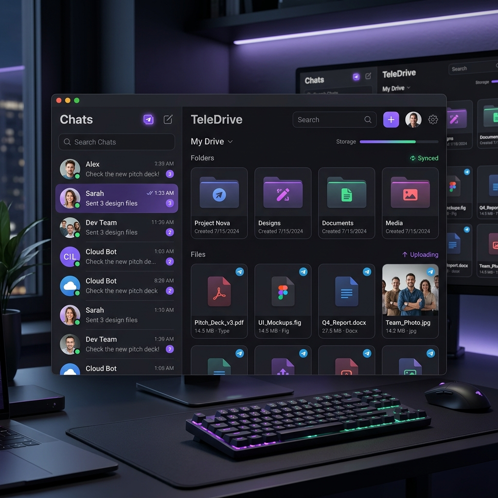
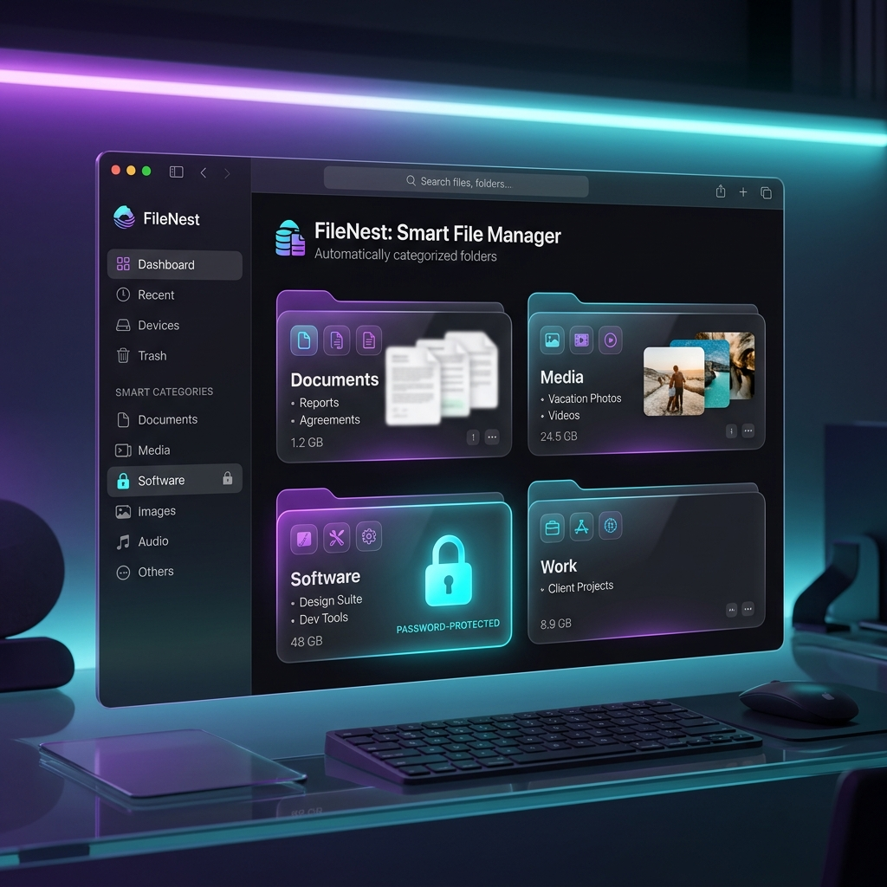
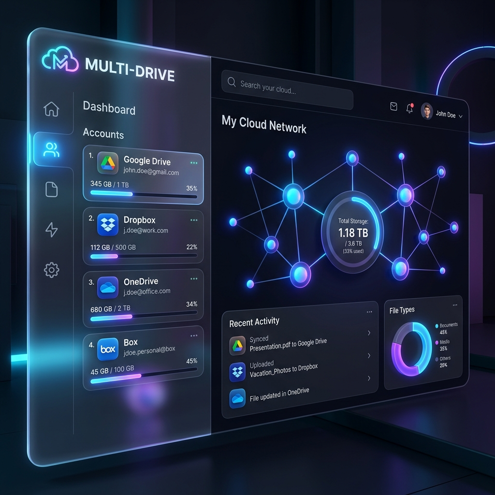
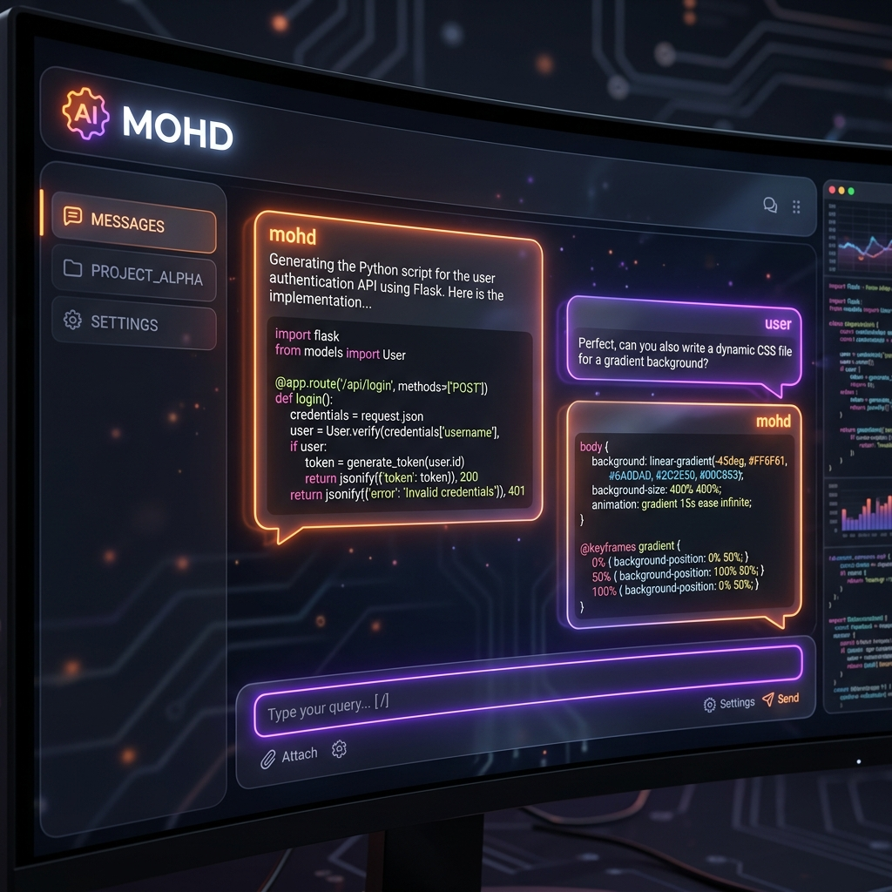

Every project starts as a blank directory.
The plan comes first. The stack, the data model, the shape of the API. Getting this part wrong costs ten times more later, so I spend it properly.
Cloud & Software Developer
FastAPI backends, React frontends, Docker deployments. I work alongside your team from data model to deployed URL, and I care about clean structure, accessibility, and products that feel finished.
Design
Clean layouts, accessible patterns, and type that carries the hierarchy.
Build
FastAPI, Redis, PostgreSQL: systems that stay coherent as they grow.
Ship
Docker, CI/CD and cloud platforms: from repo to live service.
A small set that shows the range: cloud platforms, real-time systems, and products built end to end.

A UAV-based aerial cargo logistics platform that takes each shipment from cargo request through dispatch, flight tracking, and delivery to mission completion.

Async upload workers, Redis queues, and PostgreSQL metadata turn Telegram channels into a dependable storage backend.

A self-hosted, Dockerized storage platform where application and storage services run as isolated containers on infrastructure you control.

A print queue management dashboard built around REST APIs, so printing workflows stay organized and reliable.

High-speed link sharing with smart caching, so transfers start fast and stay out of your way.

A checkout-ready shopping experience built with clean, accessible HTML and CSS for a meaningful journey.

Real-time crypto prices compared at a glance, laid out with CSS Grid and plain JavaScript.
Most engagements start with one of these situations, not with a request for technology. Each one has a defined shape.
The plan comes first. The stack, the data model, the shape of the API. Getting this part wrong costs ten times more later, so I spend it properly.
Working software beats perfect plans. API contracts, components, containers. Each layer stays small enough to test and honest enough to keep.
Built is just the start. Deployed, running, watched, and pruned. What earns its place stays; the rest gets cut without ceremony.
Software that ships is my favorite kind of problem. It took a lot of shipped projects to be able to say that.
Cloud · FastAPI & DockerI build cloud storage and API products with real architecture. TeleDrive abstracts Telegram channels into a storage backend behind API workers, with async uploads, Redis queues and PostgreSQL metadata. The pieces stay small; the system stays honest.

Frontend · React & TypeScriptUnified dashboards that aggregate real accounts. Multi Drive connects multiple Google profiles into one interface, with breadcrumb folder traversal, root search, and encrypted credential sync. Clean components, strict state, accessible navigation.

Design · UI/UX & AccessI pair responsive, accessible interfaces with the systems behind them. PrintHub is a type-safe React dashboard for print queue management; the same care goes into a pilgrim checklist or a crypto utility. Type, spacing and state, considered the same way.
What I look for is whether the work keeps working long after the last commit. That is the test.
I would like to hear what you are working on. The first conversation is diagnosis, not a pitch: what is happening that makes this important now? I take on full-stack builds, frontend work, and deployment cleanups, and I am open to collaboration and internships.
Or write to mohdirfanr0329@gmail.com directly.
{kind=link}
{kind=link}
{kind=link}